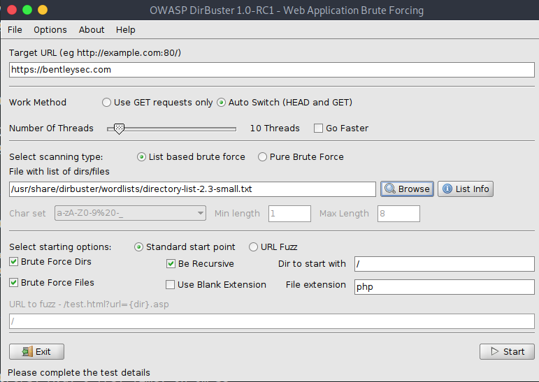

DirBuster is a multi threaded java application designed to brute force directories and files names on web/application servers. Often is the case now of what looks like a web server in a state of default installation is actually not, and has pages and applications hidden within. DirBuster attempts to find these. However tools of this nature are often as only good as the directory and file list they come with. A different approach was taken to generating this. The list was generated from scratch, by crawling the Internet and collecting the directory and files that are actually used by developers! DirBuster comes a total of 9 different lists, this makes DirBuster extremely effective at finding those hidden files and directories. And if that was not enough DirBuster also has the option to perform a pure brute force, which leaves the hidden directories and files nowhere to hide.
